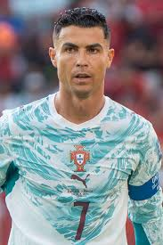
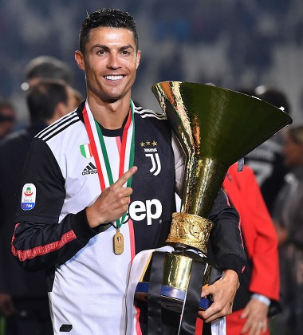

Cristiano Ronaldo dos Santos Aveiro (pronuncia portoghese [kɾɨʃˈtjɐnu ʁuˈnaɫdu]; Funchal, 5 febbraio 1985) è un calciatore portoghese, attaccante dell'Al-Nassr, di cui è capitano. Con la nazionale portoghese, è diventato campione d'Europa nel 2016 e ha vinto la UEFA Nations League 2018-2019 e 2024-2025. Soprannominato CR7 per via del suo caratteristico numero di maglia, è considerato uno dei migliori calciatori di tutti i tempi[1] e occupa la 4ª posizione nella speciale classifica dei migliori calciatori di sempre stilata dall'IFFHS. È il marcatore più prolifico nella storia del calcio,[2] nonché il detentore dei primati di presenze e di reti con una nazionale di calcio. Rientra nella ristretta cerchia dei calciatori con almeno 1000 presenze in carriera, nella quale è il giocatore di movimento con il maggior numero di apparizioni.[3]

Cristiano ha giocato per il Portogallo

Cristiano Ronaldo ha giocato per la Juventus
Cristiano Ronaldo ha giocato per il Real Madrid